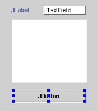
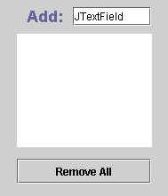
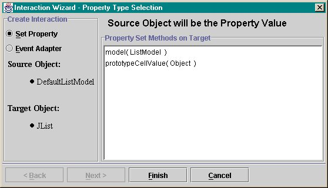
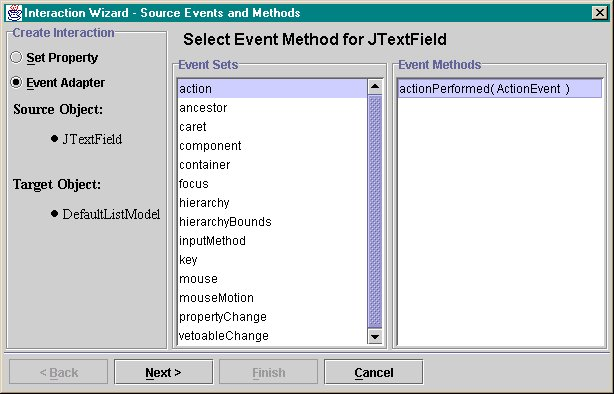
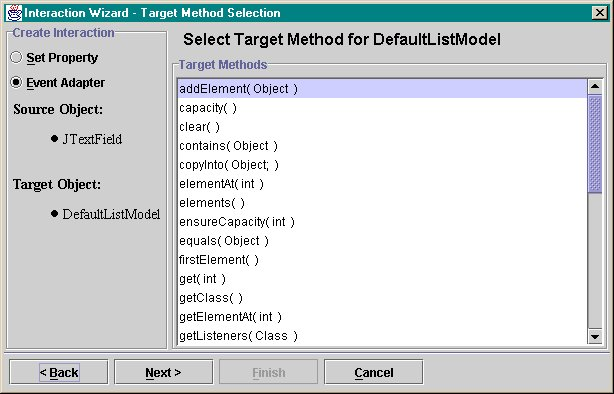
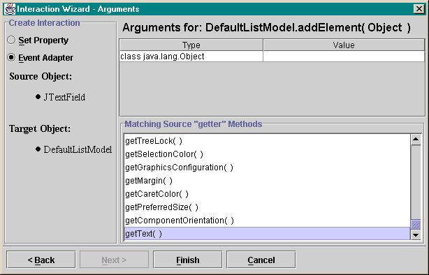

This tutorial will demonstrate the main features of building an application with Bean Builder. It will cover, component instantiation, property editing, property association and event adapter creation for wiring events. You will also save the design and run it outside Bean Builder.
Please skim over the User's Guide so that you will be familiar with the various areas of the Bean Builder user interface.
The simple application that will be built is an entry list. Pressing return on a text field will appends it's contents as a list item. A button will be enabled to remove all the items from the list.
The application will be developed by laying out the components, wiring them together and saving the design to disk.
Objects are retrieved from the Object Palette below the toolbar. As you move your cursor over the individual items, notice that a brief description of that object is presented in the status bar.
If you hold you're cursor over the object icon, a tooltip will appear with the type of object. You can change the icons in the palette using the Icons menu. The icons, tooltip text, and status string has been retrieved from the BeanInfo class associated with the object class.
Note: The BeanInfo information is incomplete for JDK 1.3 beta.
Select the JList item from the Swing tab on the objects palette.
Notice that the cursor changes from a pointer to a cross hair. This indicates that the tool is in "instantiation mode".
Click and drag a small rectangle onto the design panel.
An empty JList should appear and the cursor will return to a pointer.
Repeat the process for a JTextField, JLabel and a JButton so that the interface looks the same as the following figure:

Clicking on an object will make it the current object. The properties of the current object will be displayed in the properties panel. If this is a visual object, then it will be selected in the Containment Hierarchy. The current object will have blue resizing handles around it. These handles can be used to resize and move the object.
The Property Panel contains a list of introspected properties of the current object. Each row represents a PropertyDescriptor and the array of descriptors in encapsulated in the beanbox.property.PropertyTableModel.
The Property column shows the display name of the PropertyDescriptor in alphabetical order. If you hold the mouse over an item in this column, a tooltip appears with the short description of the property from the PropertyDescriptor.
The Value column displays the current value for that property in a PropertyEditor that was specified for that type.
Select the JButton object as the current object and change the label property to "Remove All".
When you press the Enter key, the text of the button should be changed to the new property value.
Change the name of the JLabel object to "Add: " by changing it's text property
Increase the value of the JLabel object's font property to 18 point using the font PropertyEditor.
Finally, set the horizontalAlignment of the label to be right justified by selecting "RIGHT" using the alignment combo box.
Your user interface should look like the following:

The model view controller (MVC) architecture of the JFC components requires a model which acts as an intermediary between the user interaction and the data. In order to have list display data a model should be associated with it. For this example, we are going to set the model of the JList object to use a DefaultListModel. First we have to create a new instance of the list model and place it on the design panel for manipulation.
Put the cursor focus in the Instantiate Bean text field (try alt-b) and enter the following string: javax.swing.DefaultListModel
A rectangle in the upper left of the design panel should appear and it will be the selected object. Notice that the Containment Hierarchy doesn't show the same selection. This is because the hierarchy only displays visual beans and the list model is non-visual (i.e., not subclassed from java.awt.Component).
The newly instantiated DefaultListModel is in the design but is not associated with an object. This model should be associated with the JList object in the user interface. Use the Interaction Wizard to define the way that objects relate to eachother. The interaction will be to take a source object and set it as a property value on the target object using a setter method from the target. This means that we want to call the JList.setModel(...) method with the list model as the argument.
Click on the instance of the DefaultListModel and drag the mouse over to the JList object.
Notice that a line is drawn between the list model and the JList object. The JList is highlighted as a suitable target. When the mouse is released, the Interaction Wizard appears:

The items in the list will be target object methods whose parameter matches the type of the source object or can be related by an isAssignableFrom inheritance relationship.
Select the "model( ListModel )" list item and select the Finish button.
The Interaction Wizard will be dismissed and the DefaultListModel instance will be used as the model for the JList object. You can verify this by selecting the JList object and looking at the model property in the Property Panel.
The traditional way of creating an event interaction between two objects was to create a small inner class and recompile it.
This builder uses the new "java.lang.reflect.Proxy" API to create "trampoline" objects as event listeners. This API was added to JDK 1.3 and are used to synthesize listeners of arbitrary types at runtime. The advantage of using this methodology is that it avoids costly inner classes and you can dynamically create these listener classes without having to recompile code.
Click on the JTextField object and drag the cursor to the DefaultListModel object.
The Interaction Wizard will appear. The default mode will be to create a property association. Select the Event Adapter radio button and the Wizard will reconfigure itself for generating an event adapter. Notice that the Finish button is disabled and the Next button is enabled. This indicates that there are more steps to create the adapter.

Select the "action" item in the "Event Sets" list and select the Next button
You will be presented with the next page of the wizard that will allow the selection of a target method on the DefaultListModel instance. As a simplification, only target methods that require one or zero arguments are listed.

Select the "addElement( Object )" item in the "Target Methods" list and select the Next button
If the target method has arguments, then the next page will allow for the setting of the arguments.

The top portion of the panel will be a list of type value pairs for the defining the arguments statically. The value column will load the PropertyEditor associated with the type from the PropertyEditorManager.
The lower portion of the panel is a list of no argument methods
retrieved from the source object that return the same type that the target method
requires as an argument. This will allow for adapters that get generated which
use target.setFoo(source.getBar);
Select the "getText( )" item in the "Source Methods" list and select the Finish button.
A new interaction handler will be created that will add the string in the JTextField to the list when the Enter key is pressed.
Create a new event adapter for the JButton using the Interaction Wizard.
The interaction will delete all the items in the list when the "Remove All" button is pressed. Repeat the same steps through the wizard. Using the following values:
The adapters and property association are set and created for "live" objects. Test the design by taking the tool out the "Design Mode" and putting it into "Runtime Mode". You can switch between these two states by selecting or deselecting the "Design Mode" checkbox (alt-d). This Action is mirrored on the View menu.
In Runtime mode, the objects on the design panel become "live". The application behaves the way that it was designed.
Type some values in the text field an press the Enter key at end of each string. These values should appear in the list. Pressing the "Remove All" button will clear the list.
Bean Builder uses a new method of persistence that can write the object graph and properties out to disk in a plain (and editable) text format. There are two new formats available: BeanScript - a terse format that is similar in syntax to an expression evaluator language and XML format.
Press the Save button to save the design to disk. If this is the first time that the design is saved, then you will be prompted with a FileChooserDialog to select the format and the name of the persistence file.
Note: The data currently in the models and text fields will also be saved to disk. If you wish to save the application in a blank state then delete all the values.
If you saved the design in an XML format then you should have a file that looks like this: test.xml
Use the Open button to reload the design or open an alternative design.
Use the New button to create a new design.
All these buttons are mirrored in the File menu.
Part of the goals of Bean Builder is to introduce a new portable persistence format. Included is a modest 50 line program called TestShell that reads a design persistence file and recreate it.
From the root of the directory, enter the string on a command line from the root of the distribution:
% java -cp beanbox.jar TestShell test.xml
The panel that was was created with the builder should be in a frame.